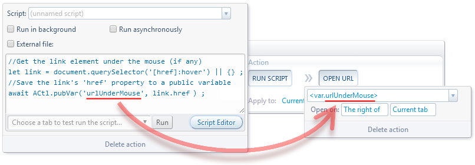

Forum
Install now from theChrome Web Store
Forum
Install now from theChrome Web Store
Forum
Install now from theChrome Web Store
Forum
Install now from theChrome Web Store
//Set private `variable1`
await ACtl.var('variable1', 'Script 1 private') ;
//Set public `variable1`
await ACtl.pubVar('variable1', 'Script 1 public') ;//Set private `variable1`
await ACtl.var('variable1', 'Script 2 private') ;
//Get private and public `variable1`
let privateVar1 = await ACtl.var('variable1') ;
let publicVar1 = await ACtl.pubVar('variable1') ;
console.log('Private var1', privateVar1) ; //outputs 'Script 2 private'
console.log('Public var1', publicVar1) ; //outputs 'Script 1 public'//Get the link element under the mouse (if any)
let link = document.querySelector('[href]:hover') || {} ;
//Save the link's 'href' property to a public variable
await ACtl.pubVar('urlUnderMouse', link.href) ;